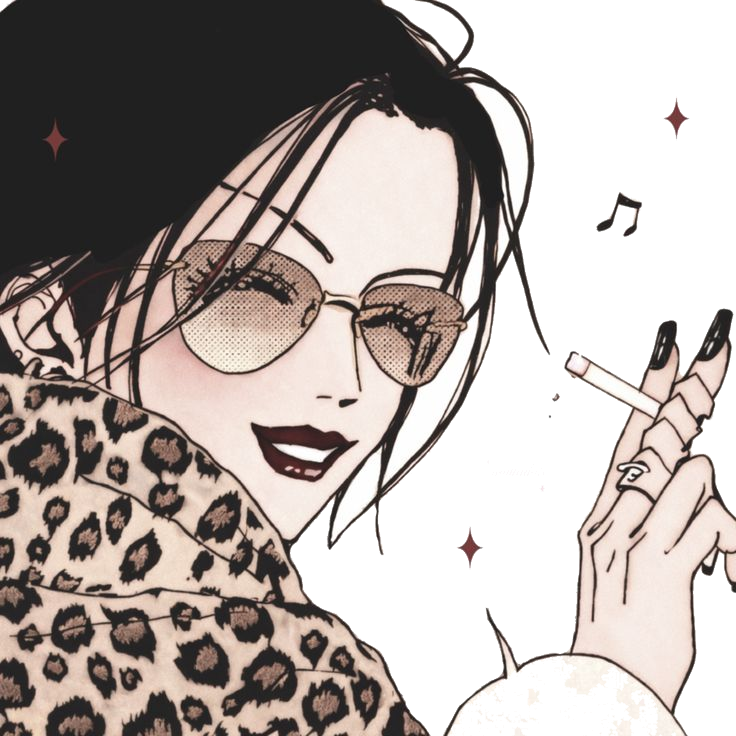
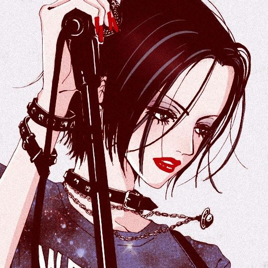
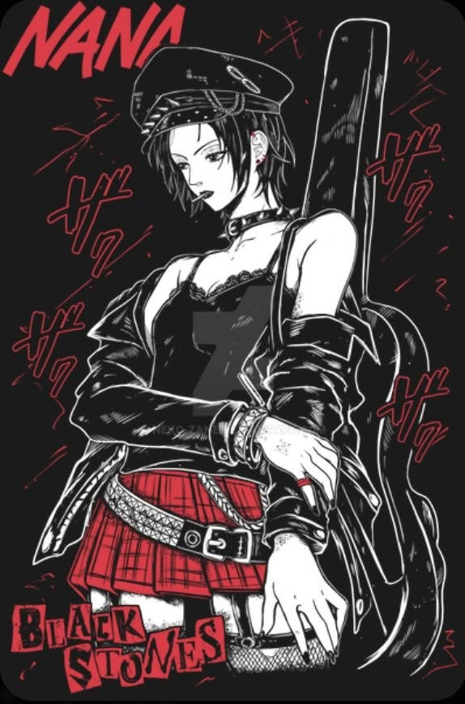
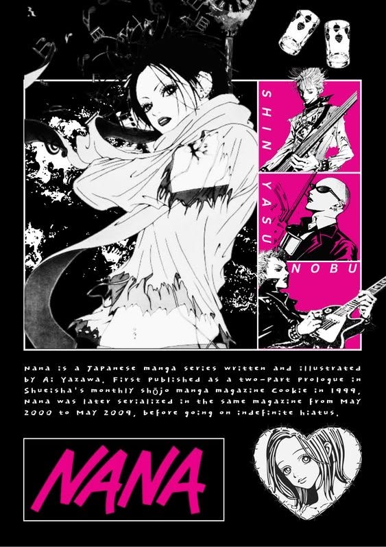
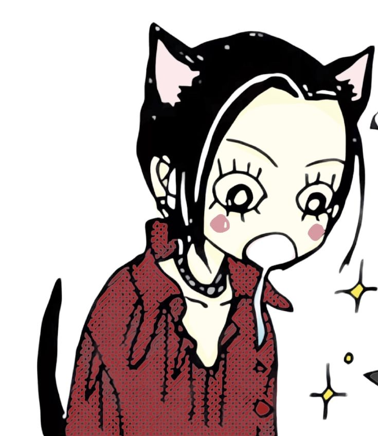
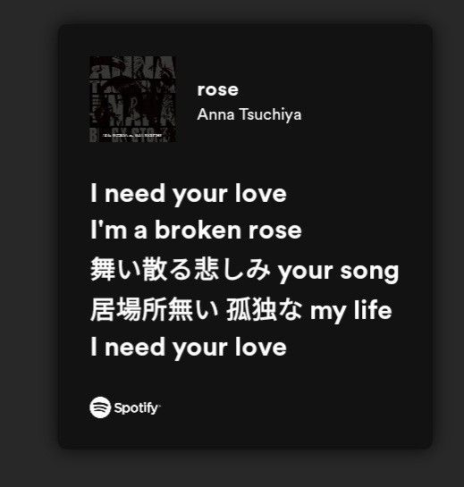

The voice of Black Stones
Red lipstick, chained chokers and a microphone — the live-house portrait of Black Stones’ frontwoman.
View moreShueisha · Cookie magazine presents

Synopsis
“Hey Hachi... They say people realize the value of something only after they lose it, but I think it’s when you face it once more that you truly recognize it. If I could see everyone now I’d depend on them again for sure. I’m scared of that. That’s why I can’t move from this spot.”
— Nana Osaki, Chapter 41
Nana Osaki (大崎 ナナ, おおさき ナナ, Ōsaki Nana) is one of the two titular protagonists of the NANA series. She is the lead vocalist of the initially underground punk band Black Stones, who moved to Tokyo to pursue her ambition of becoming a famous singer.



History
Abandoned by her mother and raised by a strict grandmother, Nana grew up in a small provincial town. Falsely accused and expelled from school, she lost everything before she ever had a chance — except music.
At sixteen she founded Black Stones with Yasu and Nobu, fell in love with guitarist Ren, and boarded the night train to Tokyo — chasing fame, a stage of her own, and the one person who left to become a star first.
Gallery
Style

A punk of the ’70s in the spirit of Sid Vicious: Vivienne Westwood corsets, a spiked choker, red lipstick and a lotus tattoo on her left arm. She smokes Seven Stars, mixes lace with leather and turns every Tokyo sidewalk into a runway.
Discography

In the anime adaptation Nana’s songs were performed by Anna Tsuchiya — her track “Rose” became the anthem of Black Stones.
Contact